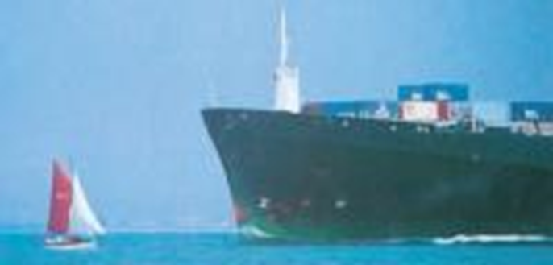
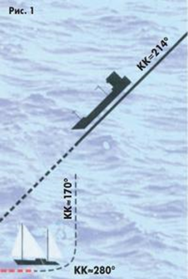
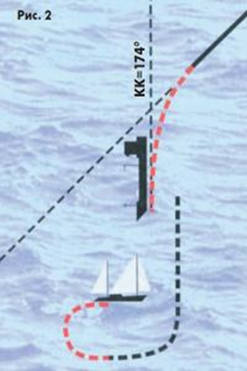
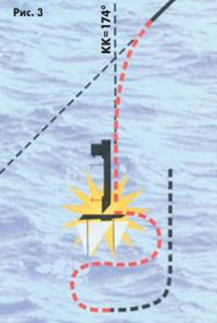

Столкновения судов
Гибель яхты «Бещады»
Источник: https://www.barque.ru/advice/2003/death_boat_bieszcszady
Год: 2003. Номер журнала «Катера и Яхты»: 185
Польский журнал "Zagle" (№1 2002 г.) опубликовал заключение Морской коллегии при Окружном суде Гданьска о виновниках трагедии, унесшей 10 сентября 2000 г. жизни семи яхтсменов вместе с капитаном Лешеком Лючаком. Тогда грузовое судно-газовоз "Lady Elena" ("Леди Елена") столкнулось с яхтой "Bieszcszady" ("Бещады") примерно в 5 ч 25 мин в точке с координатами 56°35'08" N и 07°28'04" Е при западном ветре силой 5 баллов, волнении моря 4 балла и очень хорошей видимости.

Коллегия 70% вины возложила на яхту и 30% — на газовоз. Причиной катастрофы стали отсутствие должного наблюдения на обоих судах и, как следствие, ошибочная оценка обстановки. Яхта, которая, кстати, не имела бортовых огней, поняв, что возможно столкновение, изменила курс с 010° на 174°, который пересекал курс судна "Леди Елена", прошла перед его носом на расстоянии около 5 кбт, а затем начала выполнять ведущий к опасности поворот оверштаг, чтобы вернуться с южного на северный курс (при западном ветре). Во время выполнения этого поворота яхта оказалась под ударом носовой оконечности бульбы газовоза. "Леди Елена" не выполнила требований инструкции для судоводителя (п. «Человек за бортом») и маневр поворота от места аварии начала поздно. Не помог и радарный отражатель, установленный на яхте. Коллегия особо отметила отсутствие в Польше требования установки этих отражателей на яхтах длиной до 24 м.
Редакция "КиЯ" обратилась к профессору кафедры Управления судном Государственной морской академии им. адм. С.О.Макарова С.С.Кургузову кандидату технических наук, доценту, автору ряда работ по предотвращению столкновений судов, в том числе соответствующего раздела учебника «Управление судном» (М., Транспорт, 1991) с просьбой прокомментировать это происшествие.
— Сергей Степанович, как это могло быть?
— Публикация в журнале "Zagle" не дает возможности объективно реконструировать события, произошедшие 10 сентября 2000 г. в Северном море южнее Ютландской банки. Для этого необходимы все свидетельские показания, выписки из судового журнала, данные реверсографа и курсограмма газовоза "Леди Елена", гидрометеорологические данные по этому району и время столкновения, т.е. все документы, которые рассматривала или должна была рассмотреть польская Морская коллегия. Тем более, что некоторые данные, приведенные в судебном решении и в приложенных схемах, вызывают откровенное недоумение.
Так, не очень вероятно изменение курса яхты с 10° (?) на 174° в 05 ч 12 мин и непонятно, каким образом это могло быть зафиксировано за 11 мин до обнаружения яхты с борта т/х "Леди Елена". Совершенно невероятно хотя бы кратковременное следование яхты курсом 270° при западном ветре. И как было доказано отсутствие навигационных огней на яхте?
Поэтому приведенное ниже — это всего лишь попытка реконструкции происходивших событий, которая могла бы объяснить сложное и непредсказуемое перемещение яхты непосредственно перед столкновением и возможные причины такого маневрирования. Сразу следует сказать, что при наличии западного ветра по приведенным схемам невозможно объяснить указанные маневры и выстроить непротиворечивую версию случившегося. Более или менее понятными причины указанных маневров яхты становятся лишь в случае юго-западного ветра. Попытаемся при этом допущении выстроить свою схему событий.
Яхта "Бещады" следовала генеральным курсом примерно 214° в направлении Дуврского канала, лавируя против ветра. Хотя реальный лавировочный угол яхты неизвестен, предположение о том, что курсы яхты на галсах были 160-170° и 270-280° представляются достаточно обоснованными.
До 05 ч 23 мин (см. рис. 2) яхта находилась слева от курса т/х "Леди Елена", фиксируя его на кормовых курсовых углах.

"Леди Елена" шла курсом 214° и догоняла яхту, имея существенное преимущество в скорости. Вахтенный помощник капитана либо не видел лодку, либо (что кажется более вероятным) не обращал на нее внимания, так как на этом курсовом угле и при таком ракурсе она не представляла ни малейшей опасности. Рулевой яхты мог (учитывая время суток, ветер, волнение, соотношение скоростей, возможное наличие других судов) из-за невнимательности не увидеть судно слева по корме.
В 05 ч 23 мин примерно в 5 кбт от т/х "Леди Елена" (т.е. примерно за две минуты до столкновения при ориентировочной скорости газовоза около 14-16 уз) рулевой яхты, не посмотрев назад (это является обязательным перед поворотом оверштаг), произвел поворот и лег на очередной галс 270-280°. Именно в этот момент вахтенный помощник "Леди Елена" обратил внимание на яхту, так как она стала теперь представлять угрозу. Думаю, поэтому время 05 ч 23 мин зафиксировано как момент "обнаружения" яхты. Почти сразу после обнаружения неблагоприятного маневра яхты "Леди Елена" отвернула влево на 40° и в 05 ч 24 мин легла на курс 174°, проходящий по корме у "Бещады". В 05 ч 23 мин, закончив поворот, рулевой яхты увидел справа позади траверза судно, идущее на пересечение его курса. Скорее всего, он сразу понял свою ошибку и начал ее немедленно исправлять, уваливаясь до фордевинда. Во время уваливания паруса закрывали от него газовоз, и рулевой заметил, что судно изменило свой курс влево лишь только после того, как форштевень яхты пересек линию пеленга на т/х «Леди Елена». Оказалось, что яхта опять идет на пересечение курса судна, но теперь уже со стороны его правого борта (см. рис. 3, время 05 ч 24 мин).

Рулевой яхты попытался вновь привестись к ветру, но, набрав на курсе фордевинд значительную скорость смещения под ветер, не успел этого сделать. В тот же момент яхта вошла в мертвую зону визуального наблюдения с мостика т/х «Леди Елена». Вахтенный помощник капитана, потеряв яхту из вида, не мог предпринимать никаких дальнейших действий, так как с равной вероятностью лодка могла "вынырнуть" из мертвой зоны как справа, так и слева от судна. Результат — удар в правый борт яхты в 05 ч 25 мин (см. рис. 4).

Мне представляется такое развитие событий вполне вероятным. Подтвердить или опровергнуть эту версию достаточно просто — следует запросить метеопрогноз на утро 1 сентября 2000 г. в северо-восточной части Северного моря [1].
При таком развитии событий главной (и единственной) причиной произошедшего столкновения является ошибка рулевого яхты, начавшего в 05 ч 23 мин смену галса поворотом оверштаг, не убедившись предварительно в безопасности маневра.
Дальнейшие действия т/х «Леди Елена» по спасению экипажа яхты (время начала маневра, вид маневра, предпринятые действия) обсуждать невозможно в связи с отсутствием документальной базы.
По моему мнению, основным наглядным уроком этой трагедии должно стать осознание каждым яхтсменом важности "взгляда назад" перед каждым поворотом оверштаг. И если обнаруживается судно, которое может быть опасным во время поворота или непосредственно после него (следует учитывать резкое снижение скорости на повороте), то возможны только два варианта действий:
· при отсутствии навигационных опасностей по курсу — продолжать следовать прежним галсом до расхождения с обнаруженным судном с тем, чтобы после поворота оверштаг пройти по корме у него;
· при невозможности следовать прежним галсом из-за навигационных опасностей — сменить галс поворотом через фордевинд и пройти по корме у обнаруженного судна.
[1] По данным Британского Адмиралтейства, на утро 1 сентября 2000 г в указанном районе были зафиксированы следующие погодные характеристики: видимость — 8-10 миль; направление ветра — 214-220°